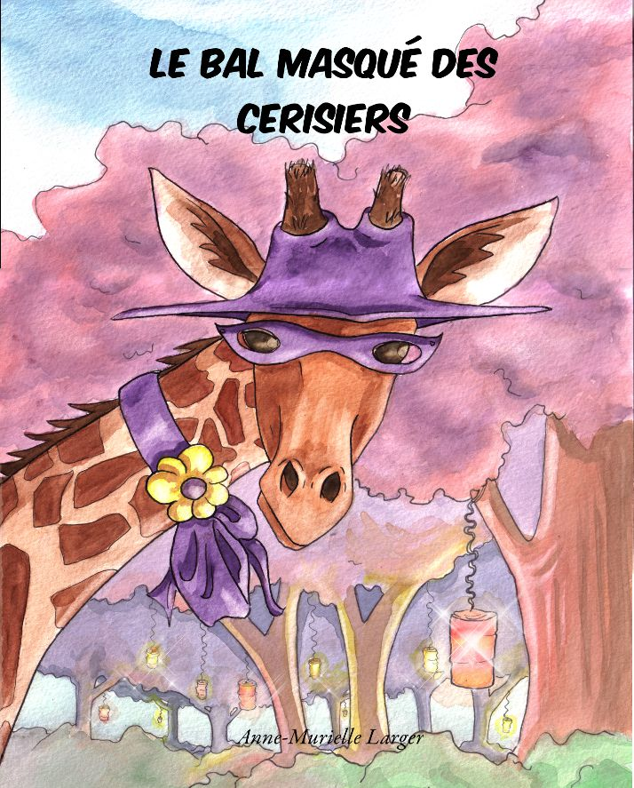
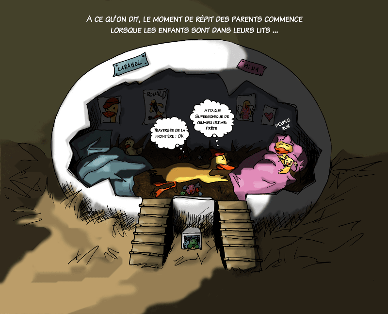
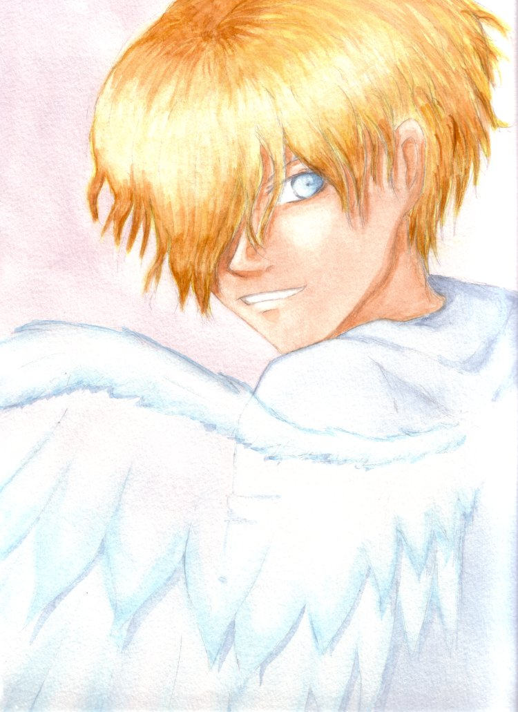

Mon amie Chiponette : « Minette se cache »
Un petit chaton qui adore jouer à cache-cache et explorer tous les coins de la maison.
Lire l’album en ligne
Livres illustrés pour enfants, BD & illustrations
Bienvenue dans la partie « Namea ». Ici se retrouvent les livres pour enfants, les BD comme Globus Cruciger ou Azaël le vampire, ainsi que plusieurs galeries d’illustrations.
Un petit chaton qui adore jouer à cache-cache et explorer tous les coins de la maison.
Lire l’album en ligne

Capucine la girafe n’ose pas se joindre aux autres animaux pour le grand bal masqué… jusqu’à ce qu’elle trouve le courage de se déguiser.
Acheter le livre : voir les infos.

D’autres petits univers pleins d’humour et de tendresse.

Une BD de type manga héroïque fantasy autour d’Inaki et de l’Orbe sacré.
Lecture en ligne :
Volume 1 ·
Volume 2
Univers :
Points-clés ·
Personnages ·
Pays ·
Races ·
Galerie V.1 ·
Galerie V.2

Une BD autour d’un vampire pas tout à fait comme les autres, déclinée en deux versions.
Lecture en ligne :
Nouvelle version
Ancienne version

Aquarelles, feutres à alcool, pastel sec, illustrations numériques…